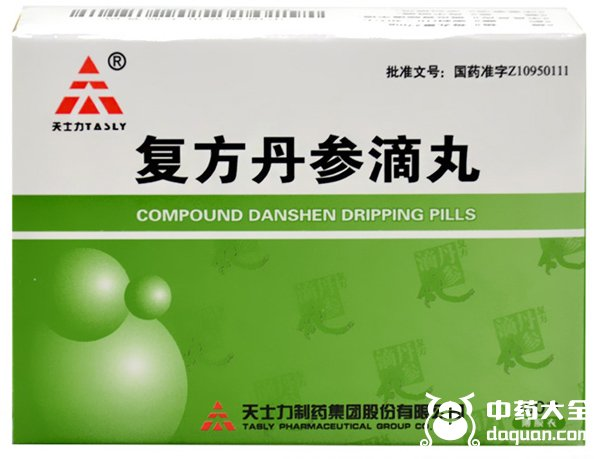
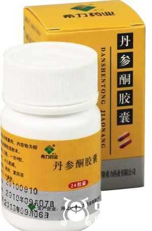
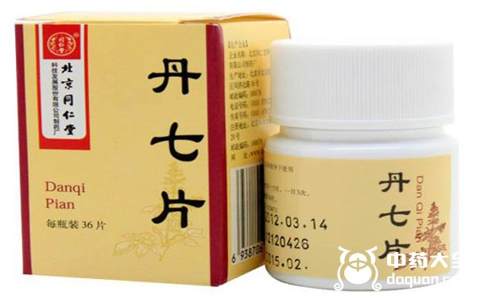
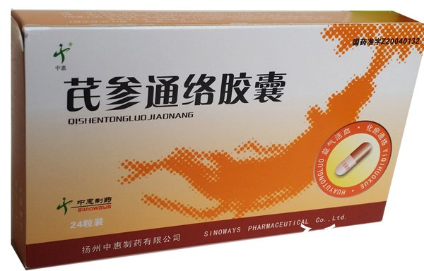
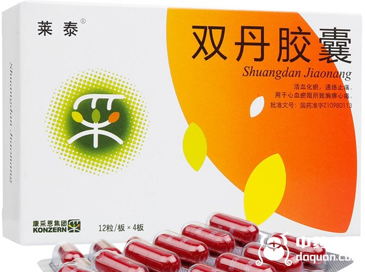
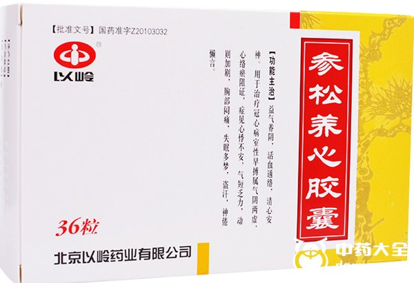
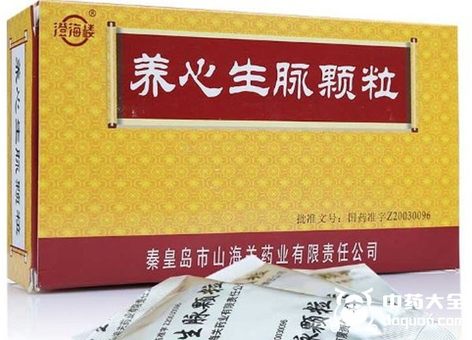
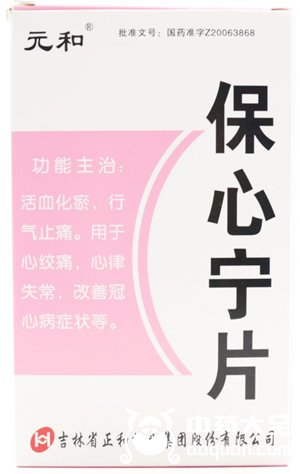
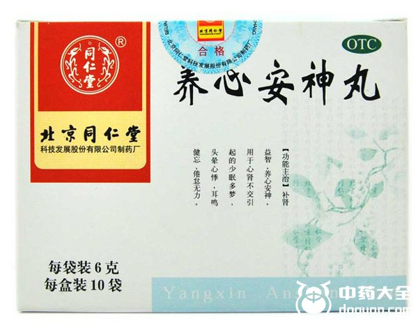

玄参性微寒，有清凉热血、泻火解毒、养阴生津的功效，对于热病有很好的治疗效果，像身热烦渴、少津便秘、眼睛干涩、喉咙肿痛、疮疖等症状，均可以用玄参内服或外敷调理。此外玄参有一定的降低血压血糖的功效，与玄参效用相似的还有丹参。丹参更侧重于活血散瘀、消痛散热、养血安神，轻者用于改善月经不调、闭经、产后瘀滞，重则治疗心脑血管疾病，扩张冠状动脉，调节血压和局部堵滞缺血的症状。因此在心血管方面有许多含玄参丹参的中成药。
1、复方丹参滴丸

复方丹参滴丸主要由丹参、三七、冰片三种药材制成，当中除了丹参活血散瘀，三七在化瘀止血方面也有奇效，因此复方丹参滴丸是用来治疗心绞痛的常用药。口服或者舌下含服，也能理气止痛，对于胸中憋闷也有改善效果。与它有相同功效的还有复方丹参片。
2、丹参酮胶囊

丹参酮胶囊的主要成分就是丹参的乙醇提取物，基于丹参清热解毒的功效，丹参酮胶囊能用于抗菌消炎。作为处方药，常用于治疗痤疮、外耳道炎、外伤感染、扁桃体炎和疖肿等症状。
3、丹七片

丹七片顾名思义主要成分就是丹参和三七，作为处方中成药，常用于治疗胸闷、痛经、血瘀气滞等症状。因为有活血化瘀的功效，所以孕妇和有出血情况慎用。
4、芪参通络胶囊

芪参通络胶囊的主要成分是黄芪、丹参、水蛭、大黄，当中水蛭能通经破瘀，丹参益气活血，因此对于气虚血瘀导致的中风症有治疗作用。主要是作用于病中恢复期，改善半身不遂、偏瘫麻木等症状。
5、双丹胶囊

双丹胶囊中的两丹即是指丹参和牡丹皮，丹参与牡丹皮都有清热解毒、活血化瘀的功效，因此双丹胶囊能通络止痛，对气血阻滞引起的胸闷心痛有很好的疗效。
6、参松养心胶囊

参松养心胶囊的主药是人参、丹参、麦冬、山茱萸，当中人参、丹参补气活血，山茱萸有特有的强心功能，搭配麦冬养阴润燥，因此有活血通络、益气安神的功效，可以治疗心室早搏、心悸不安、气短乏力。
7、养心生脉颗粒

养心生脉颗粒同样具有活血散瘀、益气养阴的功效，其主要成分为人参、麦冬、丹参、枸杞子、五味子，当中五味子也有益气生津、收敛固涩的作用，所以用于改善气短、口干症状，常见的有治疗气虚阴亏引起的胸闷心悸。
8、保心宁片

保心宁片的主要由丹参、当归和枳壳的浸膏组成，当归行气，丹参活血，因此常用于治疗心绞痛、心律失常以及改善冠心病等症状。
9、养心安神丸

养心安神丸中含有地黄、丹参、当归、五味子、合欢皮、珍珠母等12种药材，当中珍珠母归心经，有清心安神的作用，因此此药主要用于安神宁心，治疗神经衰弱、失眠等症状。
结语：关于玄参、丹参的用药还有非常之多，功效也大同小异，解毒消炎、益气活血、通络散淤，生活中也可以有较为易得的玄参和丹参片，通过泡水或含服来达到日常的保健。